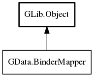

BinderMapper
Object Hierarchy:

Description:
public interface BinderMapper : Object
Interface that allows easier mapping of object. This is not to be confused with BindingContractMapper which is very similar.
ContractMapper does exact same job on contract level which means that binding don't just fall apart when source or target is unvailable.
BinderMapper should be used where there is no need to track source changes while BindingContractMapper provides a bit heavier but more
reliable bindings.
When to use one or another? - Read documentation about passive and active bindings. Whenever passive is more suitable BinderMapper should
be used, for active using BindingContractMapper trough contract is better - For binding things that don't require changing persistence
BinderMapper is correct choice. Under this fall things like main gui or list box rows - For binding things that track current selection
like for example having listbox with items where your main gui needs to handle current selection BindingContractMapper is correct choice
Since:
0.1
Content:
Properties:
Methods:
- public BindingInterface[] map_all (Object? source, Object? target, string common_target_property_alias, BindFlags flags = SYNC_CREATE, string prefix = "", string suffix = "")
Maps complete object structure from source to target. Map internally
calls map_properties() by setting up layout from all enumerated properties available in source object
- public BindingInterface[] map (Object? source, Object? target, BindFlags flags = SYNC_CREATE, string prefix = "", string suffix = "")
Maps complete object structure from source to target. Map internally
calls map_all() and specifies ALIAS_DEFAULT as targets common alias property which stands for default value property. This is not to
be confused with map_to_single(). Later maps single source property to all elements in target which is useful to control sensitivity
or visibility when specific layout is chosen
- public abstract BindingInterface[] map_properties (Object? source, Object? target, string[] layout, string common_target_property_alias, BindFlags flags = SYNC_CREATE, string prefix = "", string suffix = "")
Maps only specific properties or sublayouts from source to target
- public abstract BindingInterface[] map_single (Object? source, string source_property, Object? target, string[] layout, string common_target_property_alias, BindFlags flags = SYNC_CREATE, string prefix = "", string suffix = "", owned PropertyBindingTransformFunc? transform_to = null, owned PropertyBindingTransformFunc? transform_from = null)
Resolving of objects being mapped is exactly the same as in map() with
one difference instead of mapping them with their respective pair, it maps all to the same property and same value. This is useful to
control things like visibility or sensitivity. And the other differnce is that unlike in map this also supports transform functions.
- protected BindingInterface? bind (Object? source, string source_property, Object? target, string target_property, BindFlags flags, owned PropertyBindingTransformFunc? transform_to = null, owned PropertyBindingTransformFunc? transform_from = null)
All binding mappers should for consistency reasons call this method to
invoke binding as it guarantees consistency of it.
- protected BindingInterface? bind_transfers (BindingDataTransfer? source, BindingDataTransfer? target, BindFlags flags, owned PropertyBindingTransformFunc? transform_to = null, owned PropertyBindingTransformFunc? transform_from = null)
Invokes binding between two BindingDataTransfer objects
- public Binder binder ()
Returns binder object for chaining
Inherited Members:
All known members inherited from class GLib.Object
- @new
- new_valist
- newv
- add_toggle_ref
- add_weak_pointer
- bind_property
- connect
- constructed
- disconnect
- dispose
- dup_data
- dup_qdata
- freeze_notify
- @get
- get_class
- get_data
- get_property
- get_qdata
- get_type
- notify_property
- @ref
- ref_sink
- replace_data
- replace_qdata
- remove_toggle_ref
- remove_weak_pointer
- @set
- set_data
- set_data_full
- set_property
- set_qdata
- set_qdata_full
- steal_data
- steal_qdata
- thaw_notify
- unref
- weak_ref
- weak_unref
- notify
- ref_count